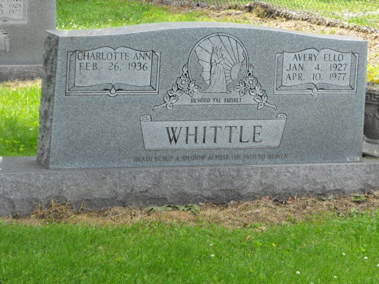

Whittle line · Eunice's first husband · Russell County, Kentucky, and New Castle, Indiana
Also known as: Ello Whittle; Avery E. Whittle; Avery Whittle
Ello as a young soldier, about 1946 (photo shared on Find a Grave by Matthew Dion Whittle).
Quick Facts
Born
4 January 1927, Russell County, Kentucky
Died
10 April 1977, New Castle, Indiana
Last residence
New Castle, Indiana
Buried
Whittle Cemetery, Russell County, Kentucky
Occupation
Hotel work (1947); gardener at a distillery (1950)
Religion
Not found
Immediate Family
Parents
Stanton Bell Whittle (reported 1892–1972; a derivative Social Security-style index gives 10 July 1893–1 October 1972, so his birth year/date remains unresolved)
Louvenia M. (McGowan) Whittle (reported 1900–1940; these dates currently come from a derivative cemetery aggregation and need her original death certificate/headstone record)
Debra (Smith) Ray — named as Debra Ray in Theresa’s 2016 obituary; married to Buck Ray
Cynthia “Cindy” Whittle Matheny — named as Cindy Matheny in Theresa’s 2016 obituary
Louretta J. Whittle Moukhtar — 2004 Texas marriage index names Louretta J. Whittle and Mohamed H. Moukhtar
Theresa Lynn Whittle (27 June 1965–29 November 2016)
Robert “Rob” Whittle — married to Sara Whittle; co-developer of Whittle Development and Rockwall Harbor/Hilton projects
Jeffery “Jeff” Whittle — married to Donna Whittle
Michael “Mike” Whittle — Director of Construction for Whittle Development in 2008 and partner with Rob and Sara in the 2012 Hilton acquisition; Debi Whittle is named among Theresa’s in-laws and is likely Mike’s spouse, but the exact pairing needs a marriage/family record
Rebecca Jo “Becky” Whittle (8 November 1967–15 May 1968) — the infant daughter called Becky in Charlotte’s 2025 obituary; same child, not an additional sibling
Known Grandchildren
Rebecca Ann “Becca” Whittle (13 May 1986–27 September 2008), daughter of Jeff and Donna Whittle; born in Plano, Texas, graduated Frisco High School in 2002, and her obituary names Charlotte as her paternal grandmother and Avery as her deceased grandfather. The same notice reports 38 first cousins across both maternal Christensen and paternal Whittle branches, not 38 Whittle cousins. She is the likely “Becca” named as a deceased granddaughter in Charlotte’s 2025 obituary; list her once, not as a separate grandchild. Read obituary · Identity cross-check
Matthew Mark Whittle, named as Theresa Whittle’s nephew and as Charlotte Whittle’s deceased grandson; likely the deceased brother “Matthew” named in Rebecca Ann Whittle’s obituary. The strongest reading is that he was another child of Jeff and Donna Whittle, and a grandson of Avery and Charlotte, but direct birth/death proof and dates remain open. Theresa obituary · Rebecca obituary · Charlotte obituary
The 25-grandchild total is independently corroborated by Theresa’s 2016 obituary, which names 25 nieces and nephews. Theresa’s notice also counts 25 great-nieces/nephews and one great-great niece; Charlotte’s 2025 obituary later reports 35 great-grandchildren and five great-great-grandchildren. These are family totals, not a complete name list. Only the two grandchildren above are individually identified in the records reviewed here. See the descendant-count cross-check.
Siblings
Anna M. (Whittle) Giles (1916–1938)
Iza Pearl (Whittle) Coffey (1920–1996)
Heasby Earl Whittle (1922–1923)
Shirley William Whittle (1923–1987) — married Resa Foster Whittle (1926–2011); children Betty Lou Dalton, Danny, Linda, Ronnie, Donnie and Aaron Whittle. See Shirley/Resa descendant research.
Grace (Whittle) Eastham (1925–2018) — married Kirby Eastham; children Gayla Sue Kerr, Treva (Roger) Meirose, Tina Milliner, Rex Allen Eastham (1951–2026), and Phyllis Holder (deceased). Rex’s wife Nancy Lee and descendants are detailed in the Grace/Rex branch note.
Ulissus Hue Whittle (1928–1929)
Marie (Whittle) Stacy (1930–2001)
Calvin Coolidge Whittle (1931–1996)
Norma Jean (Whittle) Wilson (17 January 1933–30 January 2017) — married Carson Wilson; children Carl J. (Leslie) Wilson, Sheena (Walter) Grider, Troy (Sheila) Wilson, Lyn (Myra) Wilson, and deceased son Arnold Ray Wilson. Ten grandchildren and five great-grandchildren were reported; see the Norma Wilson branch note.
Gearlind Whittle (1936; died in infancy)
Veldean (Whittle) Beckner (13 September 1938–15 October 2020) — likely married James Beckner (12 May 1933–20 January 2017); children Kathy (Tommy) Howard, Donna Sibley, Barbara Grider, James Beckner Jr. and Timothy “Timmy” Beckner (deceased). The matching children in both obituaries strongly support the marriage; see the Veldean/James family note.
Sibling-count cross-check: Avery’s 1977 obituary names five surviving sisters and two surviving brothers. Veldean Beckner’s 2020 obituary says she was preceded by four sisters and three brothers; this matches the four adult sisters (Iza Pearl, Marie, Norma and Grace) and three adult brothers (Avery, Shirley and Calvin) who died before her, excluding siblings who died in infancy/childhood. The 1940 census index also lists “Imogene Whittle”; this may be Marie (Whittle) Stacy, who is called Marie in the 1977 obituary, but the name equivalence is not proven. See the sibling and parental recheck note.
Paternal Ancestry Lead — Unproven
A new Tucker-family lead may extend Avery’s paternal ancestry through his grandfather Stanton Bell Whittle. A secondary family grouping identifies Cordelia E. Tucker Whittle (1878–1951) as a daughter of Eli Tucker (1849–1919) and Narcissus “Arsis” Popplewell (1849–1908). A 1998 Russell County genealogy query independently gives Eli and Narcissus as the parents of Cordelia’s likely sister Louisa “Babe” Tucker, and names Narcissus’s parents as Mason B. Popplewell (1823–1893) and Caroline Chamberlain (1829–1923). FamilySearch’s Caroline profile further lists her parents as William Chamberlain and Rachel Brown.
Important uncertainty: Stanton’s reported birth in 1893 predates Cordelia’s 24 December 1895 marriage to R. S. “Bob” Whittle. Cordelia was about 15 at Stanton’s reported birth, so she is a possible mother from before that marriage, but no census or vital record yet proves that relationship. Do not treat Cordelia as Stanton’s mother or attach the Tucker/Popplewell ancestors as proven until the 1900 census and original records are checked.
Parentage caution: Cordella’s 1951 obituary reports six children born to her marriage with Bob Whittle but names only five; Stanton is not named. Do not treat the missing sixth child as Stanton without the 1900 census or original vital records. See the 28 Nov 2026 obituary recheck.
Conditional collateral branch: Cordella’s 1951 obituary names Otha Whittle (born 15 September 1898; died 1 October 1978 in a secondary index) as one of her children. Later obituaries identify Otha’s wife as Nancy Mae Meadows Whittle and name seven children, including Arlus “Johnny” Whittle and Lana Kay Hale. If Cordella is eventually proven to be Stanton’s mother, Otha would be Stanton’s maternal half-brother and Avery’s half-great-uncle. This relationship is conditional and is not established until the 1900 census or original vital records confirm Cordella as Stanton’s mother. See the Otha Whittle branch note.
Possible half-sibling branch: The same compiled MyTrees family tree that lists the Tucker/Popplewell family also lists an Eli Tucker (born 1849) marrying Angeletta McQueary in 1909, with a daughter Ada P. Tucker born in 1915. If this is the same Eli who married Narcissus (died 1908), Angeletta and Ada may represent a second-wife/half-sibling branch for Cordelia. This is not yet verified and may be a same-name Eli; the 1910 Kentucky Miracode index (T1266, roll 117; Tucker code T260) and original marriage/birth records must be checked before adding anyone.
Sibling-count caution: The 1940 census index lists “Imogene” in Stanton’s household, while Avery’s 1977 obituary names sister “Marie Stacey.” Their identity is not yet proved. The current 11-sibling roster is provisional; if Imogene was a separate child, the total may be larger. See the sibling network research.
Three later obituaries independently identify Avery’s parents, Stanton B. and Louvenia/Louvienie McGowan Whittle, and document descendant branches of his sisters Norma Jean Wilson, Grace Eastham and Veldean (also spelled Veldene) Beckner. Their notices identify four children each, plus grandchildren and later descendants. See the 28 Nov 2026 paternal aunt-branch research note for the names, counts, source links and sibling-count reconciliation.
4 Jan 1927 · age 0 Born, Russell County, Kentucky, to Stanton Whittle and Louvenia McGowan
1940 · age 13 Living with his widowed father and his brothers and sisters in Magisterial District 3, Russell County, Kentucky
3 Jul 1944 · age 17 Registered for the WWII draft in Cincinnati, Hamilton County, Ohio; listed as unemployed and named “Waldo Coffee” as contact person.
5 Jan 1946 · age 18 Entered the U.S. Regular Army; enlistment record codes his term as “Panama Canal Department” and occupation as electrical engineers. This does not prove a specific unit or station (see 28 Nov 2026 military note)
9 Jul 1947 · age 20 Released from the Army
10 Apr 1950 · age 23 Enumerated with wife Eunice at 1326 rear house, Cincinnati, Hamilton County, Ohio; gardener at a distillery. The original census detail is stored once in Eunice’s folder and linked above.
23 Jul 1947 · age 20 Married Eunice Edna (Brewster) Burton at Covington, Kentucky. The marriage index reports ages 22 and 21 for Avery and Eunice, but their other birth-date evidence makes them approximately 20–21 and 16; the ages on the marriage record are unresolved (see 27 Nov 2026 note).
Date unknown The marriage ended; Eunice later used the names Taylor and Burton
1950s–1960s Married Charlotte Ann Mulvey of Covington; they raised their family at New Castle, Indiana
10 Apr 1977 · age 50 Died, of New Castle, Indiana
15 Apr 1977 Buried, Whittle Cemetery, Russell County, Kentucky
Life Story
Avery Ello Whittle, known as Ello, was born on January 4, 1927, in Russell County, Kentucky, one of the many children of Stanton Bell Whittle and Louvenia McGowan. His mother died in 1940, and that year's census found thirteen-year-old Ello at home with his widowed father and his brothers and sisters in the Russell County hills. He joined the Army in January 1946 and was discharged in July 1947.
Two weeks after leaving the Army, on July 23, 1947, he married sixteen-year-old Eunice Brewster, daughter of Homer and Sarah Brewster, across the river from Cincinnati at Covington, Kentucky. The marriage did not last. Ello later married Charlotte Ann Mulvey of Covington, who remembered him as a persistent suitor, and they raised eight children at New Castle, Indiana. He fell ill in middle age and died on April 10, 1977, aged 50. He was carried home and buried in the Whittle family cemetery in Russell County.
Photo Gallery
Ello in his Army uniform, about 1946. Photo shared by Matthew Dion Whittle, Find a Grave

The double headstone he shares with Charlotte: "Avery Ello, Jan. 4, 1927 – Apr. 10, 1977 · Beyond the sunset." Photo by Janet Ward, Find a Grave
Sources and Evidence
Kentucky, County Marriages, 1786–1965, Avery E Whittle and Eunice Brewster, 23 Jul 1947 (FamilySearch): Covington, Kenton County, Kentucky; groom Avery E Whittle, 22, parents Stanton and Lavina Whittle; bride Eunice Brewster, 21, parents Homer and Sarah Brewster
United States Census, 1940, Ello Whittle (FamilySearch): age 13, born Kentucky, son of Stanton B. Whittle (46, widowed), Magisterial District 3, Russell County, Kentucky, with Gracy, Shirley, Imogene, Calvin, Norma G. and Veldene Whittle
VA Beneficiary Identification Records (BIRLS) and Social Security Death Master File, entries for Avery Ello Whittle / Avery Whittle, as transcribed by SortedByName: Army 5 January 1946 – 9 July 1947; died 10 April 1977; born 26 July 1926 (BIRLS) or 4 January 1927 (Death Master File); Kentucky birth index: Avery E. Whittle born 4 January 1927 to Louena McGoward, Russell County
PeopleLegacy, Whittle Cemetery aggregation, Russell County, Kentucky: lists Avery Ello Whittle, Stanton Bell Whittle and Louvenia M. McGowan Whittle among burials in the same cemetery; secondary index only, no original interment register or headstone images. View cemetery listing.
Russell County Public Library, History & Genealogy collections: family histories, cemetery records, county histories, vital records and Creelsboro digital media; a local source for future original cemetery/family-book/photo searches. View holdings.
U.S. WWII Draft Registration Card, Ohio, 3 July 1944: original card for Avery Ello Whittle, Cincinnati residence, gives birth date 2 July 1926, birthplace Whittle, Kentucky, unemployed, contact “Waldo Coffee”; a 2011 obituary identifies a Russell County Waldo Coffey (1917–1994) as a brother of Cleatus Coffey. Cleatus was born in 1924, when Avery’s sister Iza Pearl Whittle (born 1920) was only three; she cannot be his mother. A separate Russell County family-history post lists a Pearl Stephens born in 1891, a possible but not yet proven match for Cleatus’s mother. No relationship between this Waldo and Avery is established; he may or may not be the draft-card contact. See the 27 and 28 Nov 2026 follow-up notes. Two-page scan saved in the shared archive, via Fold3 from NARA Record Group 147, job 12-029. Fold3 record and image. This differs from the 4 Jan 1927 date on his headstone/Kentucky birth index and the 26 Jul 1926 BIRLS date; it is a separate contemporaneous source, not grounds to silently change the profile date.;
ColumbiaMagazine, “Cleatus Cordell Coffey, Russell Springs, KY (1924–2011),” 16 May 2011: identifies Cleatus as a son of Pearl Stephens Coffey and “Bug” Coffey and names deceased brothers Glendo and Waldo Coffey. This is a lead for identifying the “Waldo Coffee” named as Avery’s 1944 draft-card contact; it does not establish that the Waldo in the obituary is the same man or that he was Avery’s brother-in-law. Read obituary.
LocateAncestors, Kentucky Coffey index: lists Waldo L. Coffey, 2 October 1917–5 August 1994, last residence Russell Springs. Derivative index only; not proof of spouse or relationship. View index.
1947 Campbell County, Kentucky marriage certificate image (FamilySearch image; the archived original certificate is stored once in Eunice’s shared documents folder): records Avery E. Whittle and Eunice Brewster married 23 July 1947 at Covington, lists Avery as age 22, Cincinnati resident, hotel work, with parents Stanton and Lavina Whittle. The age 22 statement also conflicts with the draft-card date (he would be 21) and with the 1927 headstone date (20). Retain the record’s claim and all date variants as unresolved.
Find a Grave, Avery Ello Whittle, memorial 71554504: 4 January 1927 – 10 April 1977, died Indianapolis; veteran; buried Whittle Cemetery, Russell County, Kentucky; links parents, spouses Eunice Edna Brewster Burton (m. 1947) and Charlotte Ann Mulvey Whittle, siblings and two children; Army portrait (Matthew Dion Whittle), headstone (Janet Ward) and a newspaper obituary clipping (Judy Lynn) (read 6 November 2026)
Obituary of Avery Whittle, 1977 (saved clipping, Find a Grave memorial 71554504): "Avery Whittle, 50, of New Castle, Indiana, died April 10, 1977"; names wife Charlotte, four daughters, three sons, five sisters and two brothers; services 15 April at Bernard Funeral Home Chapel; interment in Whittle Cemetery. The clipping’s small photo is part of the saved source; profile gallery continues to use the attributed Army portrait and headstone, not an unverified crop of the obituary picture.
Obituary of Charlotte Ann (Mulvey) Whittle (1936–2025): married "a man named Avery Ello Whittle"; together they raised eight children at New Castle, Indiana; preceded in death by her husband Avery (read 6 November 2026)
Original 1977 newspaper obituary clipping, preserved in Avery’s archive: view original clipping. It identifies Charlotte as his wife, names four daughters and three sons, one granddaughter, and lists the seven siblings then surviving: Marie Stacy, Pearl Coffey, Veldene Beckner, Grace Eastham, Norma Jean Wilson, Calvin Whittle and Shirley Whittle. Charlotte’s 2025 obituary confirms eight children in total, including Becky, who died at six months; Theresa’s 2016 obituary independently identifies Avery and Charlotte as her parents and names several siblings.
Obituary of Veldene Beckner, 15 October 2020, WVLC obituary archive: identifies her parents as Stanten and Louvenia McGowan Whittle, reports four deceased sisters and three deceased brothers, and burial at Whittle Cemetery. This independently supports the parental couple and the size of the sibling group, but does not name each sibling.
Official obituary of Norma Jean (Whittle) Wilson (1933–2017), Bernard Funeral Home: identifies her parents as Stanton B. and Louvienie McGowan Whittle; names sisters Grace Eastham and Dean Beckner as survivors; and says she was preceded by two sisters and three brothers. “Dean Beckner” is a likely name form for the Veldean/Veldene Beckner in this sibling group, but that identity link is not yet explicit in the obituary.
Obituary of Grace (Whittle) Eastham (27 March 1925–20 November 2018), WVLC/WHVE obituary archive: identifies her parents as Stanton B. and Louvenia McGowan Whittle and names Veldean Beckner as her surviving sister. This is direct independent support for the parent couple and the Veldean sibling connection.
Obituary of Veldene Beckner (13 September 1938–15 October 2020), WVLC/WHVE obituary archive: identifies her parents as Stanten and Louvenia McGowan Whittle, states she was preceded by four sisters and three brothers, and reports burial at Whittle Cemetery. Her first name is spelled Veldene here; Grace’s obituary spells it Veldean.
Obituary of Norma Jean (Whittle) Wilson (17 January 1933–30 January 2017), Bernard Funeral Home: independently identifies the same parents, names Grace Eastham and “Dean Beckner” as surviving sisters, and says two sisters and three brothers had predeceased her. “Dean Beckner” appears to be a shortened or variant form for the Veldean/Veldene Beckner, but that equivalence remains a cautious working identification.
Compiled cemetery listing for Hugh Frank Cemetery, Russell County, Kentucky: lists Gearlind Whittle (1936–1936) among burials. This supports the existing family-tree entry that Avery’s sibling Gearlind died in infancy; exact birth/death dates and the original burial record have not been inspected.
1950 U.S. census, Cincinnati, Hamilton County, Ohio: Avery’s occupation is recorded as gardener at a distillery; the 1947 marriage certificate records hotel work. These are dated occupations, not proof of his complete employment history.
Couple profile, Homer William Brewster Sr. × Sarah Hazel Kelly: Eunice "married first Ello Whittle, then Irvin Burton"
FamilySearch Family Tree, LTYQ-2Z1 (tree lead only)
Person Archive
Browse the records and materials preserved for Avery Ello Whittle in the American Bloodline Master Archive.
Rockwall County News, 4 June 2010: identifies “Rob Whittle and his wife, Sara,” supporting Rob’s marriage to Sara Whittle. Read issue.
Rockwall County News, 25 July 2008, page 9: identifies Mike Whittle as Director of Construction for Whittle Development and describes the Rob/Sara development work. Read issue.
Blue Ribbon News, 7 August 2012: names Sara, Rob and Mike Whittle as partners in the Hilton Dallas/Rockwall Lakefront acquisition. Read article.
Spot On Images, 26 January 2018: includes a captioned photograph link “Rob Whittle Celebrates Groundbreaking.” This is a possible portrait source for Avery’s son Rob, not Avery; copyrighted image, not copied or rehosted. View photo source.
City of Heath, 14 June 2019: group photograph captioned with Rob Whittle alongside City Manager Aretha Adams and Councilman Frank New; photo source for Avery’s son Rob, not Avery. View photograph · Read city article.
Military: United States Army, 5 January 1946 – 9 July 1947 VA (BIRLS) index and the World War II enlistment index.
Identification: a family recollection names Eunice's first husband only as "Ello Whittle." The 1947 Covington marriage, which names her parents, ties her to Avery E. Whittle, son of Stanton Whittle, and the 1940 census names Stanton's son as Ello. The marriage index reports ages 22 and 21, inconsistent with their known birth dates; see the 27 Nov 2026 age-discrepancy note. A second man, Hollis Ello "Elno" Whittle (1931–1995) of Russell County, is a different person: his parents were James E. Whittle and Sola Owens, and he was 16 in 1947.
Birth date conflict: 4 January 1927 appears on his headstone, Kentucky birth index and Death Master File; BIRLS gives 26 July 1926; his original 1944 draft registration card gives 2 July 1926. The 1947 marriage certificate calls him 22, which fits none of these dates on 23 July 1947 (the draft-card date would make him 21; BIRLS/Jan 1927 make him 20). Preserve all readings; no correction is justified without his Social Security application/birth record.
When and where the Whittle–Brewster marriage ended: try Kenton County, Kentucky, and Hamilton and Butler counties, Ohio, divorce records, about 1947–1955.
Whether he and Eunice had any children together is not known.
Find a Grave also holds a 1977 newspaper obituary clipping with a small photo of him; it is saved with his pictures but not shown here because it lists living people.
Avery has his own profile and archive folder at ello-whittle/. The 1947 Avery–Eunice marriage certificate is a shared couple record and remains stored once in Eunice’s documents folder, linked from Avery’s profile and source register.
DNA
No DNA matches linked yet.
Family Notes
No family-notes link is listed on this profile.
Profile history: Created 6 November 2026 with his identity as Avery Ello Whittle, birth, parents, Army service, 1947 marriage to Eunice Brewster, second marriage, death, burial, sources, Army portrait and headstone photo.